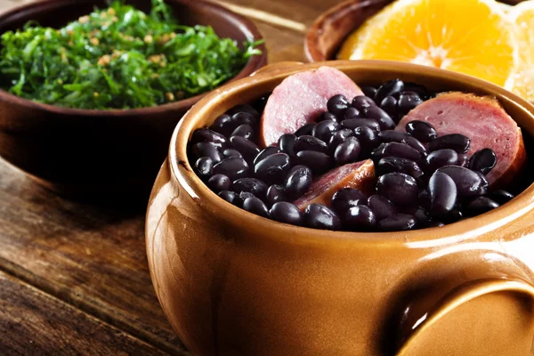

|  | Fundado em 1983, o restaurante Trem Bão tem como objetivo unir o melhor da gastronomia mineira em um ambiente sofisticado e moderno.
|
Oferecemos também uma qualidade farta de bebidas e drinks, preparados pelo melhor Barman da região de Belo Horizonte. |
 |